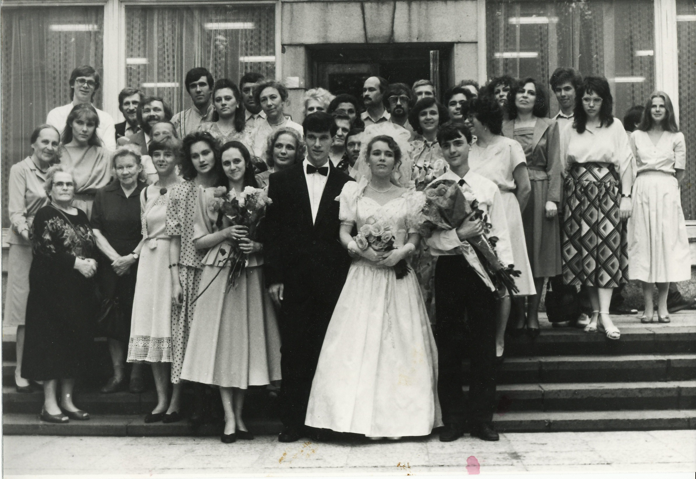
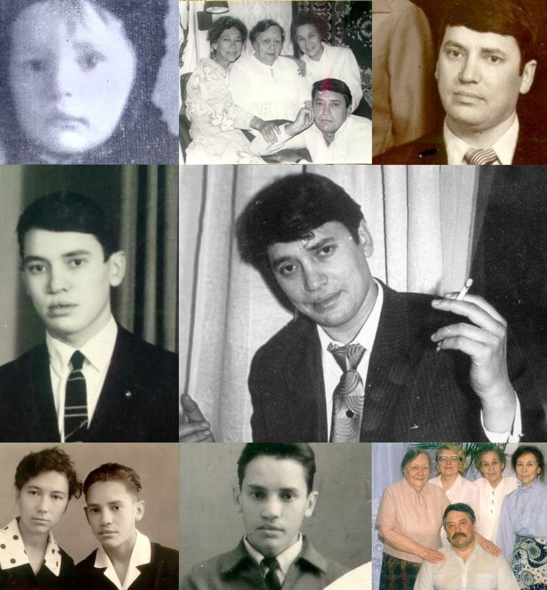
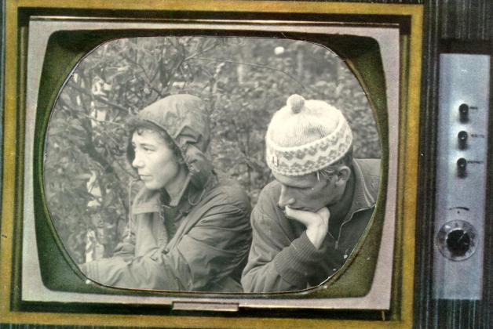

Фото разных лет
Мама (она же бабушка) Алёна комментирует фотографии разных лет — трогательный рассказ о целой жизни.
ЧитатьВоспоминания о родных, детстве, школе и важных событиях семьи. Большинство историй написаны Аллой Анатольевной Басс (Дворжицкой, Лариной).
Мама (она же бабушка) Алёна комментирует фотографии разных лет — трогательный рассказ о целой жизни.
Читать
Воспоминания в годовщину свадьбы Ирины и Александра Дворжицких — о времени, которого уже нет.
Читать
Памяти Владимира Басс (октябрь 2020) — рассказ сестры о брате, которого она нянчила с трёх лет.
Читать
Памяти Дворжицкого Николая Константиновича (1947–2014) — история любви, дружбы и общей жизни.
Читать


Воспоминания о Дине Михайловне Басс (1920–2001) — единственной и горячо любимой тёте.
Читать
Воспоминания о Басс Михаиле Борисовиче, Горелик Риве Борисовне, Басс Анатолии и Якове Михайловичах.
Читать
Воспоминания о Мельниковой Надежде Фёдоровне (1914–2006) — бабушке, хранительнице семьи.
Читать
Воспоминания о Мельниковой Надежде Фёдоровне (1914–2006) — о маме, её характере и судьбе.
Читать
Вспоминает Басс (Дворжицкая, Ларина) Алла Анатольевна — о шестидесяти годах педагогического пути.
Читать